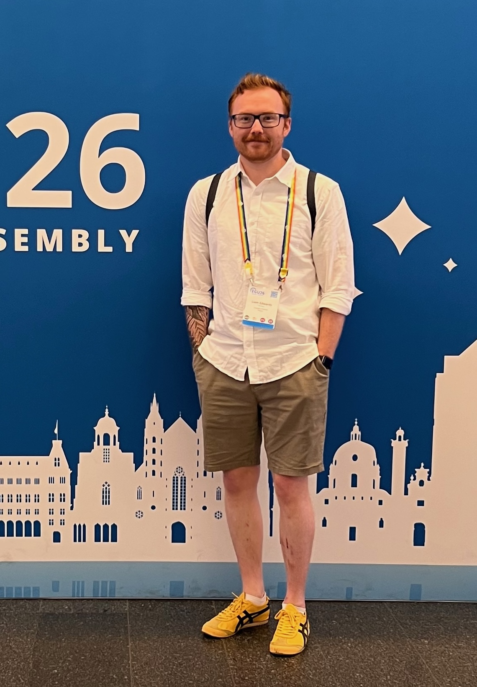

Liam Tomos Edwards
Postdoctoral Researcher
I am a Postdoctoral Researcher in the Space Physics Research Group at the University of Helsinki. My research focuses on using observations from the Solar Intensity X-ray and particle Spectrometer (SIXS) instrument onboard the joint ESA/JAXA BepiColombo spacecraft. I am interested in studying and understanding energetic particle dynamics at Mercury.
